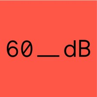

Détection des faux billets
Mettre en place une modélisation qui serait capable d’identifier automatiquement les vrais des faux billets
→ résultat : Un modèle robuste avec un score de 99% qui permet de détecter les faux billets
Je maîtrise
Je centralise, nettoie, analyse et visualise vos données, puis j'en tire des recommandations concrètes pour vous aider à prendre des décisions éclairées.
Analyste de données depuis 2020, spécialisée dans l'analyse, le suivi des indicateurs et le développement de solution data. Mon parcours, construit dans des environnements aussi variés que la relation client, les télécommunications, la distribution pétrolière et l’enseignement, m’a permis de développer une approche à la fois analytique, innovante et orientée vers l’aide à la décision.
Grâce à la maîtrise d’outils informatiques tels que R, Python, Excel, SQL et Power BI, je suis en mesure de vous accompagner dans la réalisation de vos projets liés à la donnée.
Curieuse et dotée d’une grande capacité d’adaptation, je sais également m’approprier rapidement de nouveaux environnements et intégrer les innovations technologiques à mes pratiques, notamment grâce à l'IA générative.

Outils pour explorer, analyser et présenter les données.
 MongoDBNoSQL
MongoDBNoSQL RShiny · dplyr
RShiny · dplyr Pythonpandas · NumPy · scikit-learn · statsmodels
Pythonpandas · NumPy · scikit-learn · statsmodels Power BIDAX · Power Query
Power BIDAX · Power QueryFiltrez par outil, puis cliquez sur un projet pour voir plus de détail.
Mettre en place une modélisation qui serait capable d’identifier automatiquement les vrais des faux billets
Se démarquer de la concurrence pour mieux prévoir le prix de vente des biens immobiliers
Réaliser un tableau de bord qui permet de choisir un pays à cibler
Aider une organisation à construire un monde libéré de la faim
Concevoir un rapport mensuel et faire une prévision
Améliorer la marque employeur et attirer plus facilement des talents
Avoir une vision globale de l'émission de CO₂ par zone
Montrer le progrès de vente et détecter les incohérences des données
Aider l’entreprise à mieux comprendre ses données
Proposer une première analyse des groupements de pays que l’on peut cibler pour exporter les marchandises
Aucun projet dans cette catégorie pour l'instant.
Université de Reims Champagne-Ardenne
Orange Wholesale France
ITEMM Le Mans
Jovena
Orange Madagascar
60 Decibels